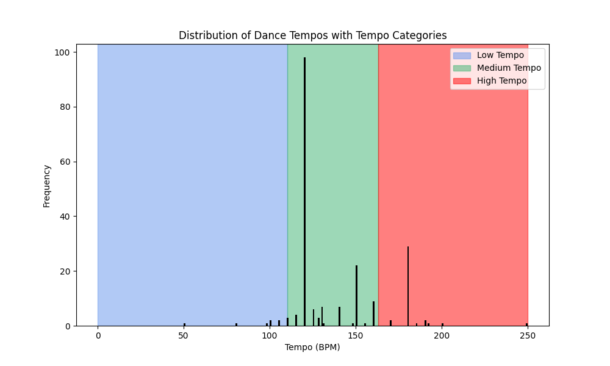
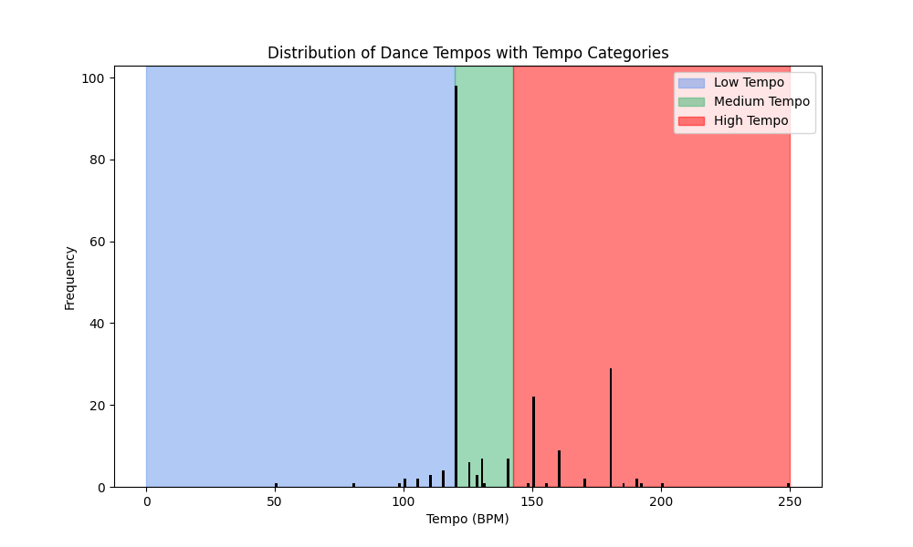

Code
def load_data() -> pd.DataFrame:
df = pd.read_csv('dancedata.csv', encoding='latin1')
print(df.head(10))
return dfFor my final project, I wanted to create something that would be associated with one of my hobbies to make it a more fun and engaging project. Although I studied a healthcare related degree in my bachelor’s and now my masters, which I do enjoy, I have other passions like dance which I have had professional training for 18 years. In these 18 years I have been trained in classic styles such as ballet, tap, jazz, and modern, however, In recent years I have taken world dance classes which provided me with the inspiration for the dataset I chose for this project. Using a dataset that includes dance styles from around the world containing educational aspects about each style is both interesting for me and the user of this interactive dance workout planner. With starting my project in the new year, many, including myself, have made fitness related resolutions and this planner is a fun way to get in shape while also learning something new.
This dataset obtained from Kaggle contains 207 different styles of dances from around the world. Each dance style contains a variety of 18 different categories of information such as the country of origin, tempo in beats per minute (BPM), associated music genre, and learning difficulty. In this project I primarily focused on the country of origin, music genre, and tempo (BPM) to create a workout planner that recommends various different dance styles based on the users’ preferences. I will dive deeper into how the dance workout planner works in the following sections as well as explain why I chose to use some methods over others.
To make this project clear and concise, I have organized it into multiple different parts which are contained into their associated function. The first two steps are to load the dataset and clean it to make it easier to work with. Next to generate the workout planner I created a function that categorizes the tempo (BPM) of the dances into three different groups (Slow, Medium, and Fast). The fourth step is to get the user input while simultaneously filtering the dataset based on the users preferences. The final step is to generate a workout plan based on the filtered dataset and the user preferences. Afterwards, the workout plan is printed while also dealing with consecutive duplicate dances that might occur in the workout.
def load_data() -> pd.DataFrame:
df = pd.read_csv('dancedata.csv', encoding='latin1')
print(df.head(10))
return dfThe first step is to load the dataset using pandas. I used the read_csv function to load my dance dataset and printed the first 10 rows with the head to get a better understanding of the data. The function then returns the dataframe which is used in the next steps of the project.
When creating visualizations like bar graphs and histograms I came across a few problems which could only be solved with some data cleaning. For example, when I was creating a bar graph that showed the number of dances per country of origin, I noticed that there were two categories for the same country. The categories “USA” and “United States” were both present in the dataset which caused inaccurate grouping of dances and their respective countries.
df['Origin'] = df['Origin'].replace('USA', 'United States')To fix this problem, I utilized the replace function which replaces all instances of “USA” in the dataset with “United States”.
df["Associated Music Genre"] = df["Associated Music Genre"].str.lower()
df['Associated Music Genre'] = df['Associated Music Genre'].str.replace(r'\s*music\s*', '', regex=True)
df['Associated Music Genre'] = df['Associated Music Genre'].str.replace(r'\s*dance\s*', '', regex=True)The second problem I came across when generating a histogram to visualize the distribution of associated music genres was that there were variations in the names of the same music genres. One example is that there were two different genres for the Latin music genre, “Latin music” and “Latin”. Using the str.lower function to convert all of the music genres to lowercase helped by making the data more uniform and therefore easier to work with. Additionally, for the replacement I used a regular expression (regex) to remove the words “music” and “dance” from the music genres and to remove any white spaces before and after the words “music” and “dance”.
df['Associated Music Genre'] = df['Associated Music Genre'].replace({'hip-hop': 'hip hop'})Another issue I came across was that there were two different genres for hip hop, “hip-hop” and “hip hop”. To fix this problem, I used the replace function which replaces all instances of “hip-hop” in the dataset with “hip hop”.
To get a better understanding of the dataset I used in this project I created a few visualizations. To make my script more organized I created two functions which were outsourced to a second file which contained most of the visualization code. The functions allowed me to plot the data easily by importing and calling them from the main file. I plotted primarily bar graphs and histograms to visualize the number of dances per country, dance type, and associated music genre. F
To divide the tempos of the dances into three different categories for the workout planner, I first used a t-test to see if the BPM is normally distributed. I created a bar graph to visualize the tempos and how many times they occurred in the dataset (Frequency). I inserted background colors onto the graph to visualize the cutoffs of tempo categories. Based on the p-value to test for normality (1.097e-06) and the bargraph on the right, you can see that the distribution of tempos among dances is not equally distributed with a peak at 120 BPM and is skewed to the right. This indicates that the most of the tempos are clustered at 120 BPM and that the majority of the remaining data is concentrated between 125-180 BPM.
mean = df['Tempo (BPM)'].mean()
std = df['Tempo (BPM)'].std()
low_cutoff = mean - std
high_cutoff = mean + stdAt first, I tried categorizing the tempos using mean and standard deviation, however, with the skewed data, the different tempos are not equally distributed into the three categories (Low Tempo, Medium Tempo, and High Tempo). There were too many tempos assigned to the Medium category, with too few tempos assigned to the Low and High categories. In efforts to distribute the tempos into the three categories, I used quantiles to divide the tempos into their respective categories.
| Mean Std | Quantiles |
|---|---|
|  |  |
On the left is the distribution of tempos using the mean and standard deviation method and on the right is the quantile method which is the one I ultimately went with in the end.
def user_numeric_input(prompt, min_value, max_value) -> int:
num = None
while True:
num_str = input(prompt)
if num_str.isdigit() and int(num_str) >= min_value and int(num_str) <= max_value:
num = int(num_str)
break
else:
print(f"Please enter a valid integer between {min_value} and {max_value}.")
return num
def user_input_options_menu(choices):
if len(choices) == 1:
print(f"Only one option available: {choices[0]}")
return 0
print("Available options:")
for i in range(len(choices)):
print(f"{i + 1}. {choices[i]}") # i + 1 makes so that the outputed list starts counting from 1 instead of 0
return int(user_numeric_input("Select the number corresponding to your preferred option: ", 1, len(choices))) - 1 # Adjusting for 0-based normalizationThe user input in the workout planner utilizes two different functions to obtain user preference. The first function requests the user to enter a number within a certain range while the second function prints a list of choices with a corresponding number which then uses the first function to acquire the option the user chose. During this, the input checks are made to ensure the correct data is in the system (e.g. just numeric input and is within a certain range).
def filter_dataset_by_user_preferences(df) -> dict:
#df = df.copy() # Create a copy of the dataframe to avoid modifying the original
duration = user_numeric_input("Enter duration of workout in minutes: ", min_value=5, max_value=120)
print("Select intensity level:")
intensity_level = user_input_options_menu(["low", "medium", "high"])
print(f"Selected intensity level: {['low', 'medium', 'high'][intensity_level]}")
df = df[df["Tempo Category"] == INTENSITY_LEVEL_TO_TEMPO[intensity_level]] #TODO fix duplicated code
print("Select origin country:")
countries = df["Origin"].unique()
country = user_input_options_menu([f"{country} ({df[df['Origin'] == country].shape[0]})" for country in countries])
# remove dances from the dataset that do not match the selected country
df = df[df["Origin"] == countries[country]]
return df, {"duration": duration, "intensity_level": intensity_level, "country": countries[country]}First the user is asked how long they would like their workout to be (workout duration) using the first input function as described above. Next, the user is instructed to select the intensity level of their workout using the second input function which is described above as well. Following the users desired level of intensity, the dances are filtered to only contain dances where the determined tempo category matches the intensity level (e.g. slow tempo is matched to low intensity). Afterwards, the user is able to choose a country from a list of countries which contain dances with the chosen level of intensity. The data is then filtered again for the chosen country. The function returns the filtered data frame as well as the user preferences.
for _, row in df_filtered.iterrows():
if total_duration >= duration:
break
dance_duration = 3 + (2 - intensity_level) # Each dance to last 3 minutes, with an additional 2 minutes for low intensity and 1 minute for medium intensity - less switches for lower intensity
selected_dances.append((row["Dance style"], dance_duration))
total_duration += dance_durationDepending on the chosen workout duration, the dances are added to the selected_dances list as long as the duration of the selected dances is lower than the desired user workout duration. The duration of each dance is determined by the users chosen intensity level. A low intensity (slow dances with slow tempo) means longer durations for each dance. If there are not enough dances of the desired intensity level are available for a certain country, then dances are selected multiple times.
workout = connect_consecutive_duplicate_dances(workout)
for dance, duration in workout:
print(f"- {dance} ({duration} minutes)")The output prints each dance with its corresponding duration. For each dance in the generated workout, the duration is the same unless the same style of dance is twice in a row. Something I would consider in the future is letting the user choose the dance duration or letting the program select the dance duration based on other factors mentioned in the dataset such as Hardness Ratio. In this case, I believe implementing something like is out of the scope of the project, however, in the future it would be a nice addition.
Github Copilot was installed in VS Code and utilized in some cases. In this project, I used AI to generate various ideas that could be done with my selected dataset in python. AI helped generate different ideas that fit my interests and what was possible with the dataset. Resources such as the course materials and Stack Overflow were the main resources that supported my learning in this project.